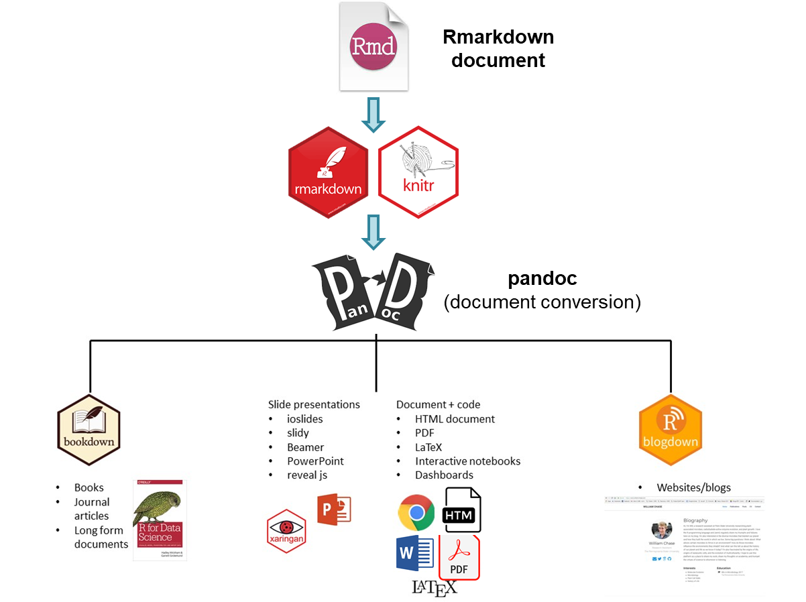

5 📚 Dynamic documents
5.1 Introduction
5.1.1 Overview
The final product of a quantitative research is a report (e.g., scientific publications), i.e. a textual description of your research findings along with figures and tables resulting from your analysis. summary tables and figures. Based on this data, you discuss findings and give recommendations while using the data as evidence that backs up your discussion.
Imagine the following situations
- you are informed that you were given the wrong data set just when you have finalised your article for submission to a journal. You are sent a new one and you are asked to run the same analysis with this new data set.
- you realize that a mistake was made and need to re-examine the code, fix the error, and re-run the analysis 3. someone you are training wants to see the code and be able to reproduce the results to learn about your approach?
Situations like the ones just described are actually quite common for a data scientist.
It is actually possible to keep your data science projects organized with RStudio so that re-running an analysis and recreating reports is straightforward and can be done with minimal effort.Dynamic documents can be produced to update on a routine basis (e.g. daily surveillance reports) and/or run on subsets of data (e.g. reports for each jurisdiction).
5.1.2 Learning objectives
The goal of this section is to briefly discuss why we want to learn quarto, the benefits, and the barriers to using it.
- What is a dynamic report?
- What is Quarto?
- Think about why you want to use Quarto
5.2 Background to R Markdown
This is possible due to the fact that Quarto documents enable code and textual descriptions to be combined into the same document, and the figures and tables produced by the code are automatically added to the document.
Quarto is a tool that allows you integrate your code, text and figures in a single file in order to make high quality, reproducible reports. A paper published with an included quarto file and data sets can be reproduced by anyone with a computer. R Markdown integrates code and natural language in a way that is called “literate programming” (1).
To explain some of the concepts and packages involved:
Markdown is a “language” that allows you to write a document using plain text, that can be converted to html and other formats. It is not specific to R.
Markdown files have a md extension.
It is a variation on markdown that is specific to R - it allows you to write a document using markdown to produce text and to embed R code and display their outputs. which was a variant of Markdown specifically designed to allow R code chunks to be included.
R Markdown is a widely-used tool for creating automated, reproducible, and share-worthy outputs, such as reports. It can generate static or interactive outputs, in Word, pdf, html, powerpoint, and other formats.
R Markdown files have .Rmd extension.
It is the R package: This is used by R to render the .Rmd file into the desired output.
Quarto is the successor to R Markdown. As a R Markdown document, a Quarto document intersperces code and text such that the script actually becomes your output document. You can create an entire formatted document, including narrative text (can be dynamic to change based on your data), tables, figures, bullets/numbers, bibliographies, etc.
Quatro uses a mark-up language similar to HyperText Markup Language (HTML) or LaTeX, in comparison to a “What You See Is What You Get” (WYSIWYG) language, such as Microsoft Word. This means that all the aspects are consistent, for instance, all top-level heading will look the same. But it means that we use symbols to designate how we would like certain aspects to appear. And it is only when we build the mark-up that we get to see what it looks like. A visual editor option can also be used which hides the need for the user to do this mark-up themselves.
Quarto is not tied to the R language.
Quarto files have a .Qmd extension.
This R package will read the code chunks, execute it, and ‘knit’ it back into the document. This is how tables and graphs are included alongside the text.
Pandoc actually convert the output into word/pdf/powerpoint etc. It is a software separate from R but is installed automatically with RStudio.

The process that happens in the background involves feeding the .Rmd file to knitr, which executes the R code chunks and creates a new .md (markdown) file which includes the R code and its rendered output. The .md file is then processed by Pandoc to create the final product: a Microsoft Word document, HTML file, PowerPoint document, PDF, etc.
Form small groups of 2-4 with your neighbours and discuss how you expect learning Quarto might benefit you.
🕒 5 minutes
5.3 References
- The Epidemiologist R Handbook (https://epirhandbook.com)